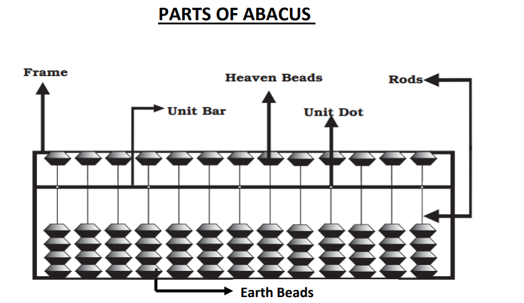
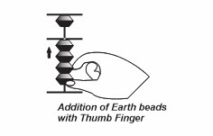
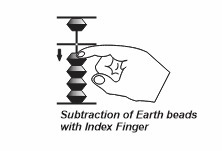
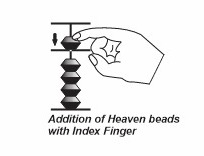
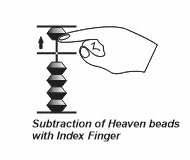

The Art of Abacus
Abacus is an tool or device used for doing all kinds of arthemetical calculations. This is the original counting machine ever made. It consists of a set of guidelines that, when used consistently, help kids advance their intellectual ability to the next level, revealing their academic greatness.
🌍 Evolution of Abacus
1. The "Abacus" is a latin word derived from Greek "Abax" Which means table ot count
2. The Japanese and Chinese refined and improved the Abacus idea. In India we follow Japanese Abacus methodology. In Japan Abacus called as "Soroban Methodology"
3. In India Abacus was started in year 1999 since then millions of students are having an opporunity and get benefited out of this.
🧠 How it Works
Abacus motto is to establish 100% speed and Accuracy.
Able to do any kind of arthemetical problems without help of pen, paper and Abacus
Improves creative thinking and logical abilities.
The 2 Stages of Mastery
| 1. Visualization | Closing your eyes and moving the beads in your "mind's eye" without touching the tool. |
| 2. Instant Arithmetic | Processing complex numbers faster than a digital calculator by simply seeing the result. |
💡 Why we don't use calculators?
Calculators give you the answer, but the Abacus teaches you how to find it. It builds concentration, photographic memory, and a deep confidence in your own mental abilities.
The Abacus & Its Parts
Click the blue markers on the image to learn about the anatomy of your abacus.

Select a Part
Click a marker on the image to learn more.
Mastering the Pincer Grip
To achieve high-speed mental math, you must only use two fingers: the Thumb and the Index Finger. This is known as the "Pincer Grip."

👍 The Thumb
The "Adder"
- Used ONLY to move Earthly beads (lower beads) UP.
- Think of the thumb as the "Power" finger for adding 1s, 2s, 3s, and 4s.



☝️ The Index Finger
The "Manager"
- Moves Heavenly beads (5s) UP and DOWN.
- Subtracts Earthly beads by moving them DOWN.
- Clears the bar (Zooming).
⚠️ The Golden Rule
Never use your middle, ring, or pinky fingers. Your other three fingers should be tucked into your palm, often holding a pencil, ready to write the answer instantly!